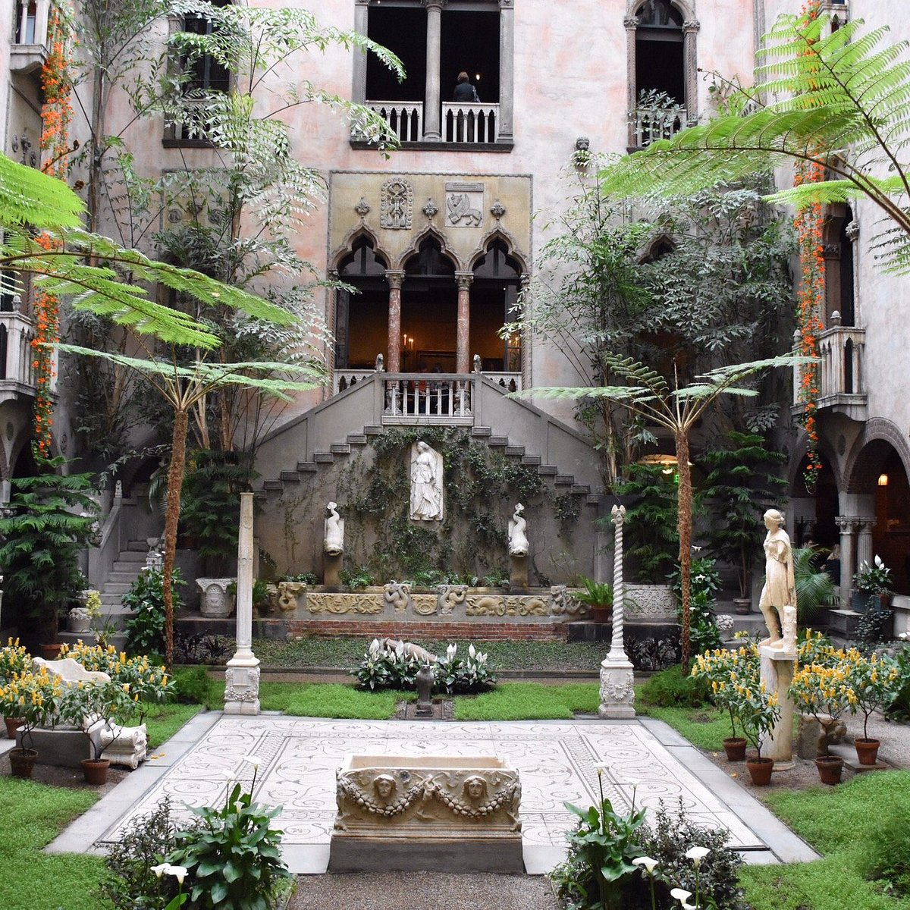
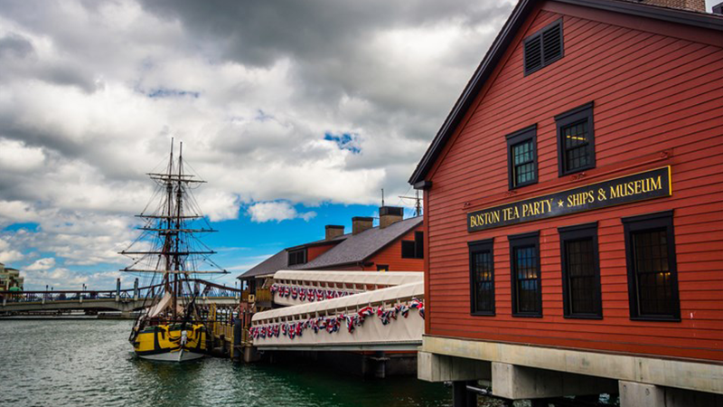
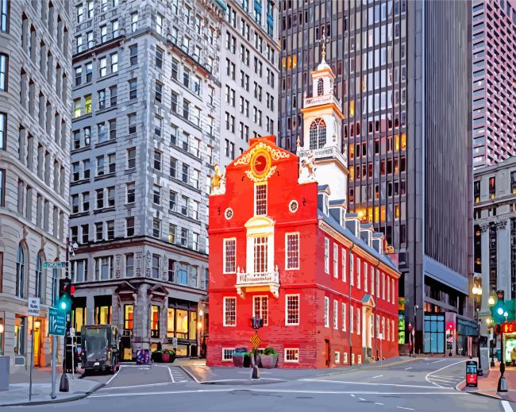

Isabella Gardner Museum:
Isabella Gardner was left this giant estate with no one to leave it on to
once she passed. She decided to leave it to the city of Boston to which
they have made it into a gorgeous, indoor and outdoor museum

Boston Tea Party:
The Boston Tea Party occurred in 1773 to protest the Parliament's tax on
tea. The site remains in the Seaport area in Boston with live performances
and museum inside

The Freedom Trail:
The Freedom Trail is a 2.5 mile trail that leads to 16 different
historical landmarks in the city of Boston
